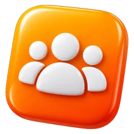
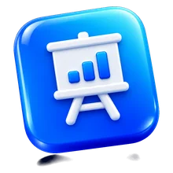
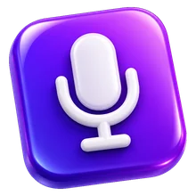
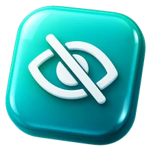
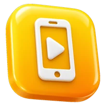
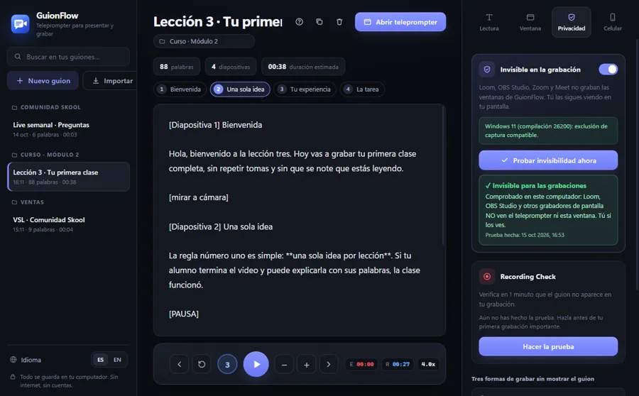
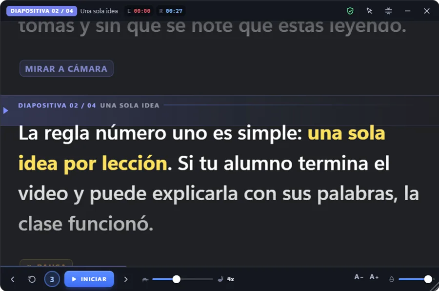
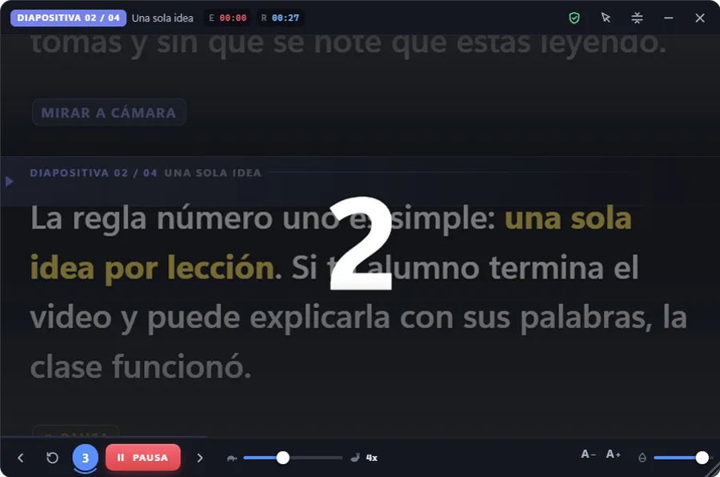
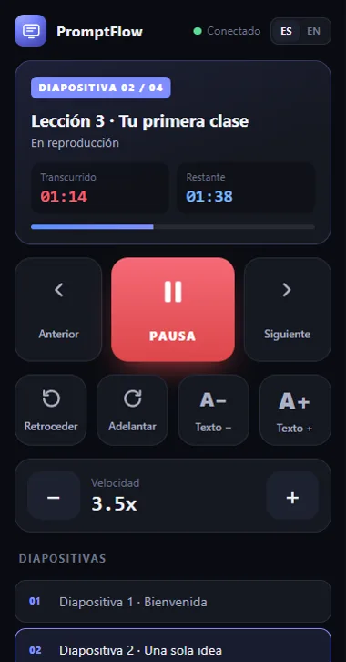

El teleprompter que flota sobre tus diapositivas. Tú lees tu guion mirando a cámara; tus alumnos solo ven tu clase. Loom y OBS no lo graban.
Funciona con lo que ya usas
Escribes tu clase una vez. Al grabar, el texto pasa frente a ti, justo debajo de la cámara, al ritmo que elijas. Tus alumnos ven a alguien seguro que mira a cámara, no a alguien que busca la frase en un papel.
Dos capturas reales de la misma pantalla, hechas al mismo tiempo en un computador con Windows 11. A la izquierda, lo que ve quien presenta. A la derecha, lo que captura un grabador de pantalla completa.
La app trae el botón Probar invisibilidad ahora. En un segundo captura tu pantalla igual que un grabador y te dice si el teleprompter aparece o no.
Graba módulos completos de una sola toma. Cada diapositiva tiene su parte del guion.
Lecciones del classroom, videos de bienvenida y lives semanales con tu guion delante.
Encima de PowerPoint, Google Slides, Canva o Keynote. Los clics pasan a través del teleprompter.
Cada palabra del guion en su lugar, sin perder la mirada a cámara que genera confianza.
Pausa, retrocede o salta de diapositiva desde el celular mientras explicas.




Así se siente leer con PromptFlow. Usa los botones del teleprompter o el celular de la derecha: los dos lo controlan.
Hola, bienvenido a la lección tres de tu curso.
Hoy vas a grabar tu primera clase completa, sin repetir tomas.
Mirar a cámara
La regla número uno es simple: una sola idea por lección.
Si tu alumno puede explicarla con sus palabras, la clase funcionó.
Cierra siempre con una tarea concreta que puedan hacer hoy.
Y compártela en la comunidad. Nos vemos en la próxima lección.
Funciona en Windows y en Mac. Elige tu computador y sigue los pasos: en 5 minutos estás grabando.
Para actualizar, cierra PromptFlow e instala la versión nueva encima. Tus guiones se mantienen.
Funciona en Mac con Apple Silicon (M1, M2, M3, M4) y con procesador Intel.
Pulsa Nuevo guion y escribe, o usa Importar para traer un Word, PDF, TXT o Markdown. Se guarda solo mientras escribes. Marca tu texto así:
[Diapositiva 2] TítuloEmpieza una diapositiva nueva
[PAUSA]El texto se detiene solo ahí
[mirar a cámara]Indicación que no se lee
**texto**Resalta una frase
Pulsa Abrir teleprompter (o Ctrl + Enter)(o ⌘ + Enter). Aparece una ventana flotante que queda siempre encima de tus diapositivas.
En la pestaña Lectura eliges velocidad, tamaño de letra, interlineado, ancho, color y dónde va la línea de lectura. La vista previa muestra el resultado al instante.
Consejo: deja la línea de lectura cerca de 30 % y el teleprompter pegado bajo la cámara. Así tus ojos casi no se mueven.
Requiere Windows 10 versión 2004 o superior, o Windows 11.
En Mac, algunas versiones recientes de macOS dejan que los grabadores de pantalla completa vean el teleprompter. Grabando solo la ventana de tu presentación, nunca aparece.
Funcionan aunque estés dentro de PowerPoint, Keynote, Slides o Canva.
| Iniciar con cuenta atrás 3·2·1 / pausar | Ctrl Alt P⌘ ⌥ P |
| Iniciar al instante / pausar | Ctrl Alt I⌘ ⌥ I |
| Más rápido / más lento | Ctrl Alt ↑ / ↓⌘ ⌥ ↑ / ↓ |
| Retroceder / adelantar unas líneas | Ctrl Alt B / F⌘ ⌥ B / F |
| Siguiente / anterior diapositiva | Ctrl Alt N / V⌘ ⌥ N / V |
| Click-through: los clics pasan a tu presentación | Ctrl Alt X⌘ ⌥ X |
| Mostrar / ocultar el teleprompter | Ctrl Alt H⌘ ⌥ H |
Antes de un video importante: pestaña Privacidad → Probar invisibilidad ahora. En un segundo te dice si el teleprompter aparece en las grabaciones de tu computador.
La primera vez, macOS pide el permiso de Grabación de pantalla: Ajustes del Sistema → Privacidad y seguridad → Grabación de pantalla → activa PromptFlow y vuelve a abrir la app.
Verde: Loom y OBS no lo ven. Si sale rojo, revisa que "Invisible en la grabación" esté activado.
Si Windows pregunta por el firewall, permite el acceso en redes privadas.
Si macOS pregunta si PromptFlow puede aceptar conexiones entrantes, pulsa Permitir.
Divide con [Diapositiva 1] y salta a cualquier sección con un clic, un atajo o el celular.
Escribe [PAUSA] donde quieras respirar, mostrar algo o hacer una pregunta.
Los clics atraviesan el teleprompter y llegan a tus diapositivas. Nada se interpone.
Inicia, pausa o acelera desde el teclado aunque estés dentro de PowerPoint o Canva.
Trae tus guiones tal como los escribiste. También TXT y Markdown.
Tiempo transcurrido y restante, como los teleprompters de estudio. Sabes cuánto dura tu clase.
Excluido de las capturas de pantalla en Windows 10 y 11. Con prueba integrada.
Cambia el idioma de toda la app con un clic, también el control del celular.
Tus guiones se guardan solo en tu computador. Sin cuentas y sin nube.
Es tu propio cálculo: mueve las barras con tus números. PromptFlow no elimina todos los errores, pero leer el guion evita la mayoría de las tomas perdidas por olvidar qué venía.
Descarga PromptFlow gratis. Se instala en un minuto y funciona sin internet.
PromptFlow se instala en el computador.
En Windows 10 (versión 2004 o superior) y Windows 11, sí: el sistema excluye la ventana de las capturas de pantalla. Las imágenes de esta página son capturas reales hechas así. Antes de un video importante pulsa "Probar invisibilidad ahora" en la app; tarda un segundo.
Las versiones recientes de macOS permiten que algunos grabadores ignoren esta protección. La prueba integrada te dice qué pasa en tu Mac. Si el teleprompter aparece, graba solo la ventana de tu presentación (Loom: "Ventana"; OBS: "Captura de ventana") o usa dos monitores.
Sí. En Windows, al compartir pantalla en Zoom, Meet, Teams o el navegador, el teleprompter no se transmite. Puedes leer tu guion mientras das el live y controlarlo desde el celular.
Lo pones donde quieras y con la transparencia que quieras. Con el modo click-through, los clics pasan a través del teleprompter y llegan a PowerPoint, Slides o Canva.
El teleprompter se instala en el computador, donde presentas y grabas. El celular funciona como control remoto: escaneas un código QR y listo.
Es gratis. No necesitas cuenta ni internet: tus guiones se guardan solo en tu computador.